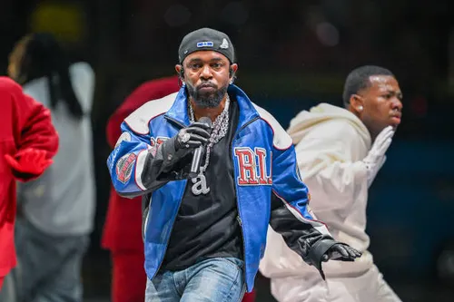
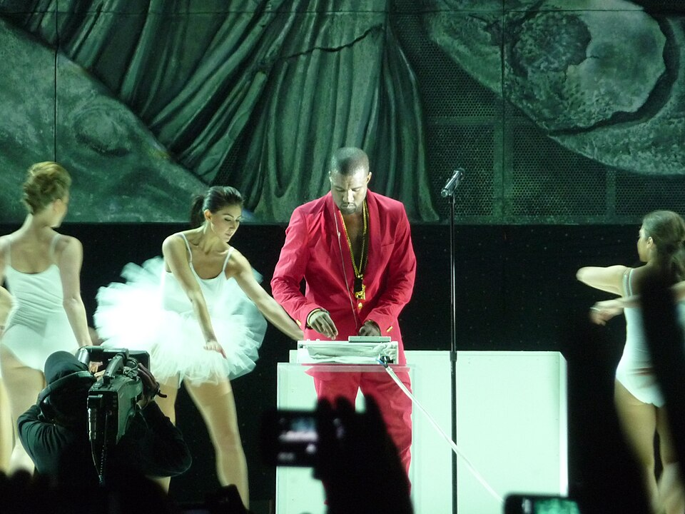
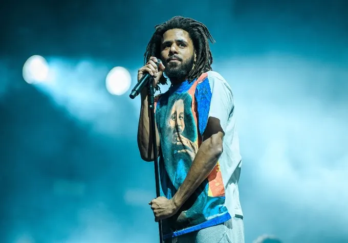
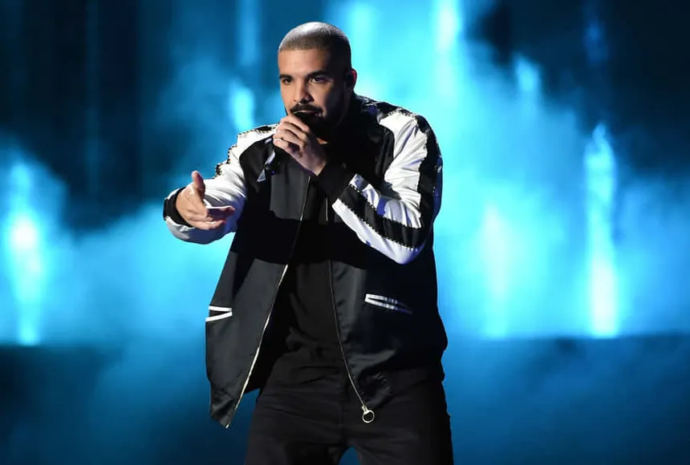

Artist Profiles
Backgrounds on the artists we're following.
Rihanna
Genre: R&B / Pop / Dancehall
Real name: Robyn Rihanna Fenty
Born: February 20, 1988, Saint Michael, Barbados
Rihanna grew up in Barbados listening to reggae, soca, and American R&B artists like Whitney Houston and Mariah Carey. She started singing as a teenager and formed a girl group with two classmates at Combermere School.
In 2003, American record producer Evan Rogers, who was visiting Barbados, heard her sing and helped her record a demo. At 16, she moved to the United States to pursue music, and the demo led to an audition with Jay-Z at Def Jam Recordings, who signed her on the spot.
Her debut single, "Pon de Replay," and her first album, Music of the Sun (2005), leaned into her Caribbean roots. Over the next decade she shifted into mainstream pop and R&B, working with producers like Timbaland and Stargate, and became one of the best-selling artists of all time.

Rihanna performing during the Super Bowl
Kendrick Lamar
Genre: Hip-Hop
Real name: Kendrick Lamar Duckworth
Born: June 17, 1987, Compton, California
Kendrick Lamar grew up in Compton, California, in a household that had moved there from Chicago. He started writing as a way to process what he saw growing up, encouraged by a teacher in middle school, and began releasing music as a teenager under the name K-Dot.
He signed with independent label Top Dawg Entertainment in 2005 and co-founded the group Black Hippy alongside fellow label artists. His early mixtapes built a strong underground following, which eventually caught the attention of producer Dr. Dre.
His major-label debut, good kid, m.A.A.d city (2012), told a coming-of-age story set in Compton and is widely regarded as one of the genre's defining concept albums. He's since built a reputation as one of the most lyrically dense and socially engaged artists in hip-hop.

Kendrick Lamar performing in the half time show of the Super Bowl
Kanye West (Ye)
Genre: Hip-Hop
Real name: Kanye Omari West
Born: June 8, 1977, Atlanta, Georgia
Kanye West was born in Atlanta and moved to Chicago with his mother after his parents divorced. He began writing poetry at five and started making beats as a teenager, eventually attending art school briefly before dropping out of Chicago State University at 20 to focus on music full time.
He spent his early career as a producer, working with local Chicago artists before getting his breakthrough producing several tracks on Jay-Z's The Blueprint (2001). His sample-heavy "chipmunk soul" production style made him one of the most in-demand producers of the early 2000s.
He released his own debut album, The College Dropout, in 2004, which established him as a rapper in his own right. Over the next two decades he became known for restless stylistic reinvention, moving through soul-sampled rap, electronic and industrial sounds, and gospel-influenced records.

West performing at Coachella Festival in 2011.
J. Cole
Genre: Hip-Hop
Real name: Jermaine Lamarr Cole
Born: January 28, 1985, Frankfurt, Germany
J. Cole was born on a U.S. military base in Germany and raised in Fayetteville, North Carolina. He began writing rhymes as a kid and later saved up for an 808 beat machine, which he used to start producing his own tracks in high school.
After graduating from Terry Sanford High School, he moved to New York to attend St. John's University, where he majored in communications and graduated magna cum laude. He released his debut mixtape, The Come Up, in 2007 while still building a name for himself in the city.
He famously waited outside Jay-Z's studio to hand him a demo in person, and was turned away the first time. Weeks later, after Jay-Z heard his track "Lights Please," Cole was signed to Roc Nation in 2009, becoming the label's first official hip-hop signee.

J Cole at 2018 Wireless Festival
Drake
Genre: Hip-Hop / R&B
Real name: Aubrey Drake Graham
Born: October 24, 1986, Toronto, Ontario, Canada
Drake grew up in Toronto and got his start as an actor, landing a role on the Canadian teen drama Degrassi: The Next Generation at age 15. While still on the show, he began recording music in a makeshift home studio and released his first mixtape, Room for Improvement, in 2006.
His third mixtape, So Far Gone (2009), built major buzz and led to him signing with Lil Wayne's Young Money label. He left Degrassi the same year to focus on music full time, and released his official debut album, Thank Me Later, in 2010.
Drake became known for blending rapping with melodic, R&B-style singing, a style that helped define a more introspective, emotionally open lane in mainstream hip-hop. He also co-founded the label OVO Sound and the fashion line October's Very Own.

Drake performing live on stage.
Megan Thee Stallion
Genre: Hip-Hop
Real name: Megan Jovon Ruth Pete
Born: February 15, 1995, San Antonio, Texas (raised in Houston)
Megan Thee Stallion grew up around music early, since her mother rapped under the name Holly-Wood and often brought her along to recording sessions. She started writing raps as a teenager, though her mother encouraged her to wait until she was older before pursuing it as a career.
While attending college in Texas, she began posting freestyle videos online, and a clip of her battling other rappers in a cypher went viral. That online momentum led to her self-released mixtapes Rich Ratchet (2016) and the EP Make It Hot (2017), building a strong grassroots following out of Houston's local scene.
In 2018, she signed with Houston label 1501 Certified Entertainment, becoming its first female rapper, and later signed a distribution deal with 300 Entertainment. Her commercial mixtape Fever (2019) and EP Suga (2020) helped her break into the mainstream, with the single "Savage" later becoming a global hit after a remix featuring Beyoncé.

Megan thee stallion performs on stage during the 2024 bet awards at the Peacock